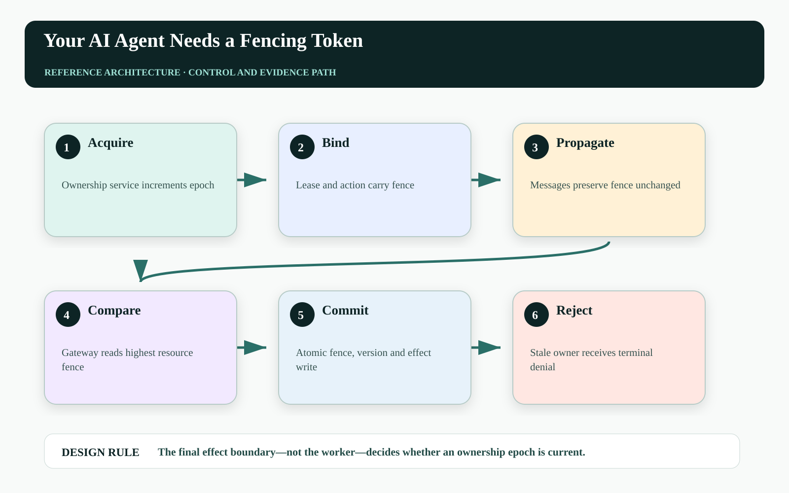
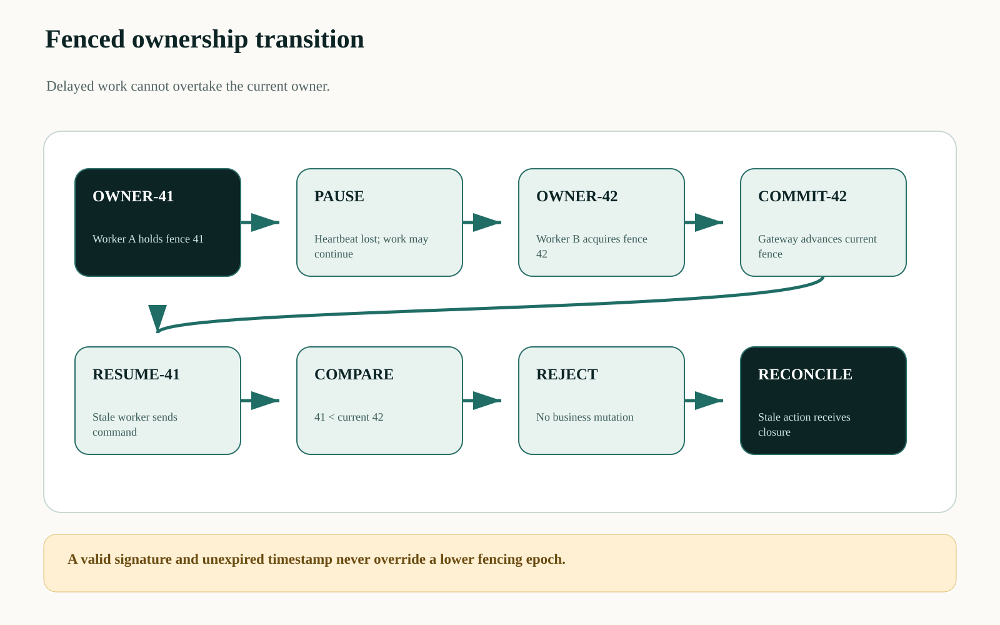
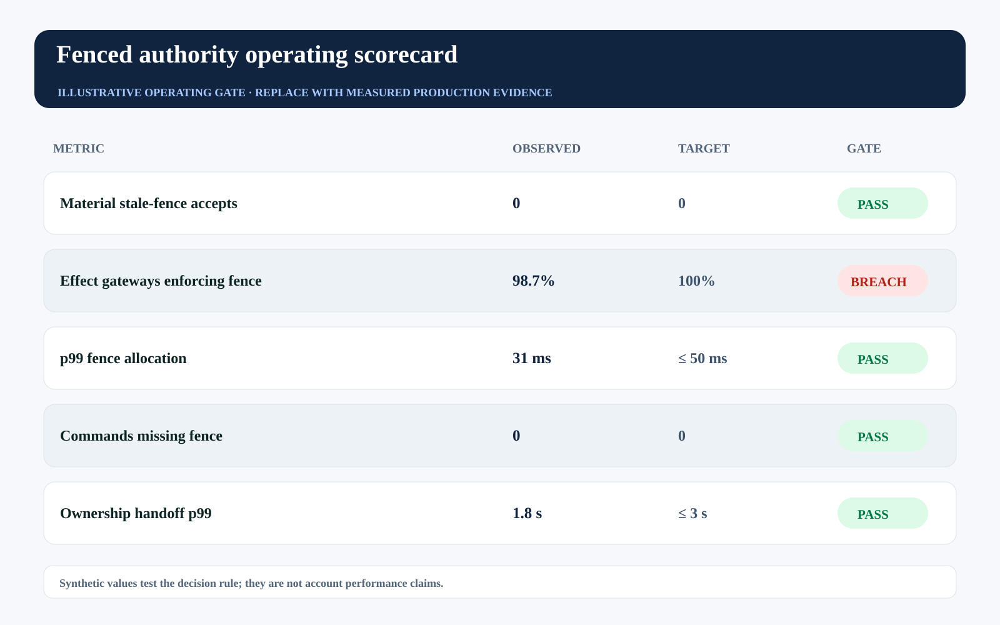

This story was developed with AI writing and visualization assistance. All incidents, thresholds, workloads, and operating values are illustrative unless a source is explicitly cited.
A worker pauses for ninety seconds, its lease expires, another worker takes ownership, and then the first worker resumes. If the CRM gateway validates only a signed token and wall-clock expiry, both workers may believe they are legitimate at different moments—and the stale one may still commit last.
Lease expiry limits time. It does not guarantee that every downstream effect boundary agrees which owner is current. Fencing adds a monotonically increasing epoch that lets the resource reject commands from older owners, even when networks delay or processes resume.
A lease tells the holder when authority should end. A fencing token lets the resource prove that stale authority has already been superseded.

Clock validity is not ownership validity#
Distributed workers do not share a perfect clock or failure view. A process can stop receiving heartbeats while continuing to run. A queued command can arrive after reassignment. A cached credential can remain cryptographically valid while operational ownership has advanced.
The effect gateway therefore needs a resource-scoped epoch. It stores the highest accepted fence and rejects any lower value. Issuance must be linearizable for the ownership domain; comparison must happen atomically with the mutation or at the last authoritative write boundary.
Fence ownership at the domain gateway#
An ownership service allocates monotonically increasing fences when work is acquired or authority is reissued. The workflow attaches the fence to every message, tool request, receipt, and compensation command. The domain gateway compares it with the resource's current fence before applying the versioned business mutation.
Fences complement, rather than replace, idempotency keys and permission leases. The idempotency key prevents the same action from duplicating; the resource version prevents stale data writes; the lease bounds scope and time; the fence prevents a superseded owner from acting.

Define acceptance as a conjunction#
The gateway accepts an action only when every control is current:
accept(a) = signature_valid(a)
∧ lease_not_expired(a)
∧ fence(a) ≥ fence_current(resource)
∧ version(a) = version_current(resource)
∧ idempotency_state(a.id) ∈ {new, same_result}The exact fence comparison depends on whether a command may establish a new current epoch. What matters is atomicity: another writer cannot advance the fence between the check and the business mutation.
| Control | Stops | Does not stop |
|---|---|---|
| Signature | Forged commands | Superseded signed owner |
| Lease expiry | Late use after time bound | Delayed command accepted before expiry check divergence |
| Fencing token | Stale ownership epoch | Duplicate from current owner |
| Idempotency key | Repeated same action | Different stale action |
| Resource version | Lost update | Authorized duplicate on new object |
Carry the fence through every hop#
The command envelope must make ownership explicit:
{
"workflow_id": "renewal-771",
"action_id": "act_01K...",
"owner": "worker:B",
"fence": 42,
"lease_id": "lease_91",
"resource": "quote:771",
"expected_version": 42,
"command_digest": "sha256:..."
}
gateway: compare-and-set(highest_fence, resource_version, action_id, mutation)Brokers, workflow engines, and tool adapters must not strip or regenerate the fence. A compensation action may require a new action identity but still carries the current ownership epoch.
Test stale-owner rejection continuously#
Track stale-fence attempts, stale-fence accepts, fence allocation latency, epoch gaps, resources without enforcement, ownership handoff duration, and commands missing fences. The non-negotiable SLO is zero material stale-fence accepts.
The synthetic gate shows enforcement coverage below target. A perfect reject rate on the fenced subset does not justify production confidence while some gateways remain outside the protocol.

| Operating signal | Decision use | Failure interpretation |
|---|---|---|
| Stale-fence accepts | Contain affected domain | Superseded owners can mutate state |
| Enforcement coverage | Block wider autonomy | Protocol ends before some effects |
| Epoch allocation | Scale ownership service | Handoffs delay or fail |
| Missing-fence commands | Reject and identify legacy caller | Uncontrolled path bypasses ownership |
Failure-injection before production#
A design review cannot prove The final effect boundary—not the worker—decides whether an ownership epoch is current. The pre-production harness must interrupt the system at the transitions where ownership, authority, evidence, and business state can disagree. The objective is not to maximize a generic pass rate. It is to demonstrate that every material fault produces a bounded state, a named owner, and an admissible recovery transition.
| Injected fault | Experiment | Required evidence |
|---|---|---|
| Delayed or reordered work | Pause the path after PAUSE and release it after RESUME-41 | The stale path cannot manufacture terminal success |
| Authority becomes stale | Advance policy, mode, ownership, or resource version before effect commit | The final gateway rejects the old decision context |
| Evidence is missing or corrupted | Remove one authoritative observation or change its digest | The outcome remains violated, inconclusive, or owned—never guessed |
| Recovery itself fails | Interrupt compensation, handoff, or receipt closure | The action stays visible with an owner, deadline, and next legal transition |
Run the matrix at concurrency, with realistic dependency lag and with the same policy and gateway versions used in the candidate release. Report p95 and p99 resolution alongside the worst unresolved example. Averages can demonstrate throughput; they cannot erase a single material breach. Promotion should require replayable evidence for the controls, not a slide stating that the team considered the risk.
Three questions for the architecture review#
Where is truth decided? Name the authoritative source and the exact component permitted to advance the workflow into a terminal state. If the answer is ‘the agent interprets the tool response,’ the boundary is not yet independent.
Where is authority finally enforced? Follow the command through every queue, adapter, cache, provider, and downstream effect. A policy decision is useful only when the last material write boundary can reject a stale, changed, or excessive action.
What blocks promotion? Convert the scorecard into executable gates with owners and expiry. A breached tail metric must reduce scope, hold the cohort, or enter an approved exception path; it cannot remain decorative telemetry.
A practical implementation sequence#
1. Choose one contested resource. Use a quote, case, account assignment, or workflow partition with concurrent workers.
2. Add monotonic epochs. Issue them from a consistency boundary appropriate to that resource scope.
3. Prove stale rejection. Pause an owner, reassign work, resume the stale process, and verify the domain gateway rejects every delayed command.
Primary references and boundaries#
This pattern builds on established distributed-systems fencing concepts and complements the idempotency concerns in AWS's safe retry guidance. The specific agent lease, fence, version, and idempotency composition is an architectural proposal.
A global fence service can become a bottleneck or single failure domain. Scope epochs to the smallest consistency domain that must reject stale ownership, and test allocation behavior under partitions and failover.
The operating conclusion#
Short-lived authority reduces exposure. Fencing makes revocation and reassignment real at the point where business state changes. Without it, a stale but valid worker can still write the last word.
If an agent worker resumes after its task was reassigned, which system proves its next command is stale?